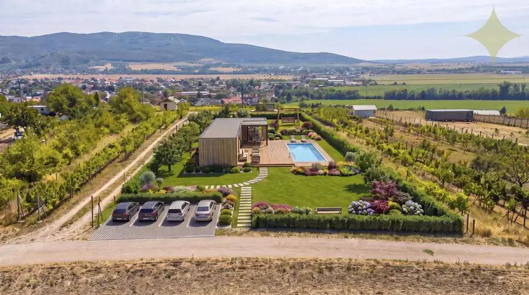
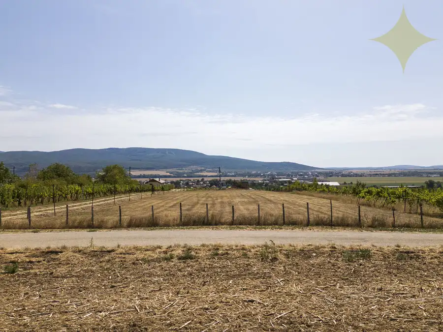
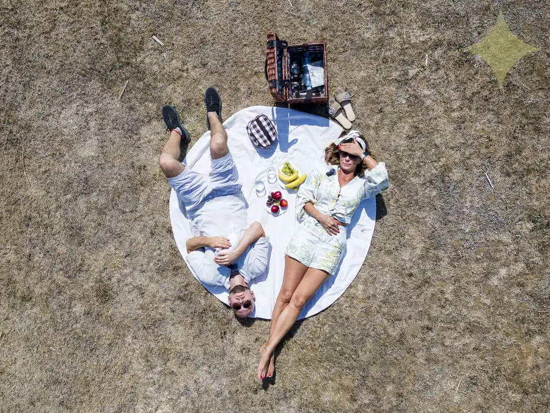
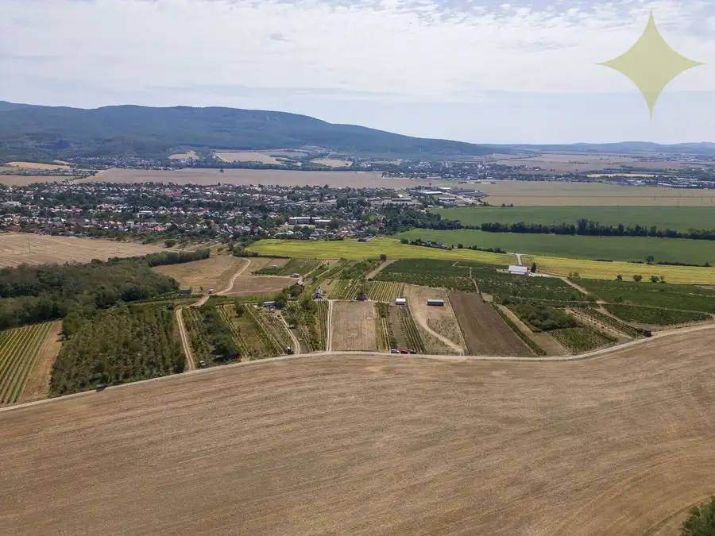
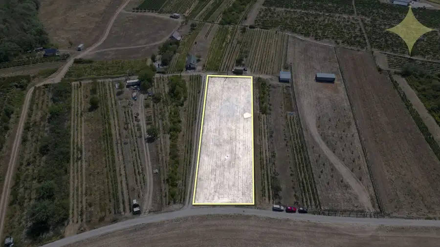
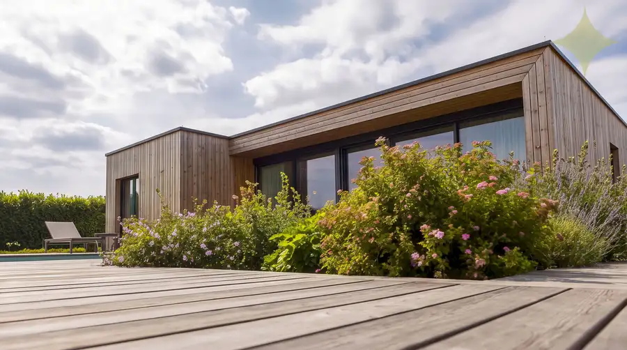
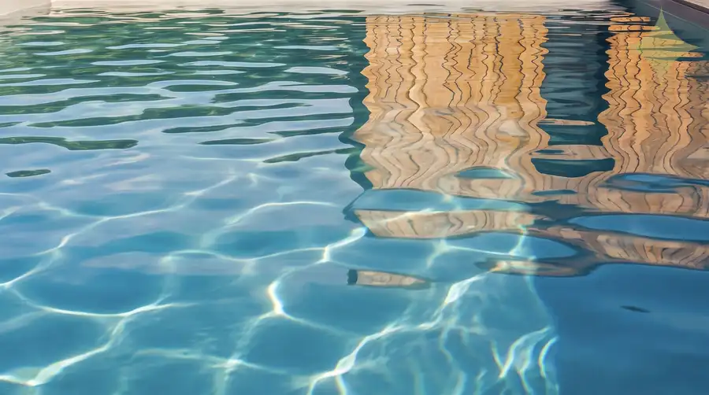

PREDAJ | Slnečný pozemok 3057 m² – Topoľčianky, okres Zlaté Moravce
Topoľčianky








- Plocha3057 m²
- VlastníctvoOsobné
O nehnuteľnosti
Na úpätí pohoria Tribeč, v obľúbenej a vyhľadávanej obci Topoľčianky, ponúkame na predaj slnečný pozemok v jedinečnom prostredí plnom pokoja, zelene a viníc.Táto lokalita je známa svojou atmosférou, históriou a prírodou. Nachádza sa tu Kaštieľ Topoľčianky, bývalé letné sídlo prezidenta T. G. Masaryka, rozľahlý park ideálny na prechádzky, ako aj Národný žrebčín Topoľčianky či vinárstvo Château Topoľčianky.ZÁKLADNÉ INFORMÁCIE:•výmera: 3057 m² •druh pozemku: vinica •lokalita: Topoľčianky (okres Zlaté Moravce) INŽINIERSKE SIETE A MOŽNOSTI:•elektrina: na hranici pozemku (zriadené odberné miesto) •voda: možnosť vlastnej studne •odpad: ČOV alebo septik •možnosť získať elektrickú energiu na vykurovanie a ohrev vody prostredníctvom fotovoltaického systému•k pozemku vedie príjazdová cesta VYUŽITIE: Pozemok je ideálny na:•rekreáciu a oddych •výstavbu chatky alebo modulového domu do 50 m² •investíciu do budúcnosti Predstavte si vlastné miesto v prírode, kde si vychutnáte ticho, súkromie a relax mimo ruchu mesta.LOKALITA A DOSTUPNOSŤ:Objavte kúsok zeme, kde spomalíte, načerpáte sily a vytvoríte hodnotu, ktorá s rokmi iba porastie. Ak hľadáte miesto, kde spomalíte a vytvoríte si vlastný priestor pre oddych alebo investíciu, tento pozemok je ideálnou voľbou.Kontaktujte ma a dohodnite si osobnú obhliadku na telefónnom čísle +421 944 468 701 alebo emailom na denisa.vargova@premiumliving.skRada vám zabezpečím bezproblémový predaj, kúpu alebo prenájom vašej nehnuteľnosti na profesionálnej úrovni spolu s kompletným prémiovým servisom a poradenstvom. Spoločne nájdeme riešenie presne pre vás. Táto inzercia nie je verejnou ponukou na uzavretie zmluvy. Vlastník si vyhradzuje právo rozhodnúť, komu a za akých podmienok prevedie svoje vlastnícke právo. Pri tejto ponuke je možné licitovať kúpnu cenu podľa všeobecných podmienok licitácie.Sledujte ma na sociálnych sieťach a webovej stránke.Váš partner pri hľadaní vysnívaného bývania!
Parametre
- Druh
- Vinica, chmelnica
- Dátum zverejnenia
- 25. 08. 2026
- Elektrina
- Nedostupné
- Odpadové vody
- Nedostupné
- Plocha pozemku
- 3057 m²
- Plyn
- Nedostupné
- Terén pozemku
- Iný
- Typ
- Predaj
- Vlastníctvo
- Osobné
- Voda
- Nedostupné
Kde to je


Mohlo by Vás zaujímať
 BytNové
79 500 €Na predaj 2i byt s loggiou v pokojnej lokalite mesta Rim. Sobota - 55,98 m²
Rimavská Sobota
2-izbový55.98 m²3. podlažie
BytNové
79 500 €Na predaj 2i byt s loggiou v pokojnej lokalite mesta Rim. Sobota - 55,98 m²
Rimavská Sobota
2-izbový55.98 m²3. podlažie
 PozemokNové
17 900 €Záhradka s krásnym výhľadom, BB - Fončorda.
Banská Bystrica
351 m²
PozemokNové
17 900 €Záhradka s krásnym výhľadom, BB - Fončorda.
Banská Bystrica
351 m²
 Komerčné priestoryNové
129 900 €Polyfunkčná budova s podkrovím, na bývanie aj podnikanie
Klátova Nová Ves
675 m²
Komerčné priestoryNové
129 900 €Polyfunkčná budova s podkrovím, na bývanie aj podnikanie
Klátova Nová Ves
675 m²